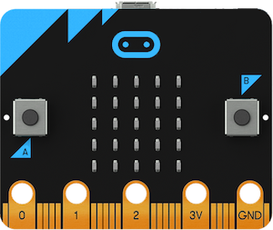
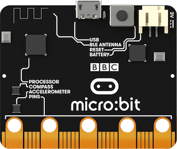
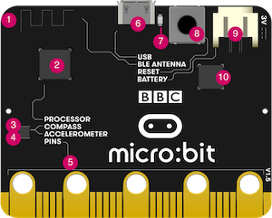
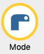

Débuter avec la carte micro:bit en SNT
1. Qu'est-ce qu'une carte micro:bit ?
La carte BBC micro:bit est une carte micro-contrôleur de 5 cm sur 4 cm, qui a été conçue — notamment par la BBC — dans un objectif pédagogique. Elle se programme à l'aide de différentes interfaces et différents langages, permettant à des élèves de tous niveaux d’aborder la robotique et d'interagir avec le monde réel.
 
2. Description des composants
Composants visibles à l'avant :
")
| Numéro | Description | Version 1 | Version 2 |
|---|---|---|---|
| 1 | deux boutons poussoirs A et B programmables | x | x |
| 2 | 25 LEDs rouges, programmables pour afficher du texte qui défile ou des images ; elles sont aussi des capteurs de lumière | x | x |
| 3 | des broches de connexion | x | x |
| 4 | une broche d'alimentation 3V | x | x |
| 5 | une broche de masse | x | x |
| 6 | un logo tactile | x | |
| 7 | une LED, témoin lumineux du microphone | x |
Composants visibles à l'arrière :

")
| Numéro | Description | Version 1 | Version 2 |
|---|---|---|---|
| 1 | une antenne radio et bluetooth | x | x |
| 2 | un micro-processeur et capteur de température | x | x |
| 3 | un magnétomètre (boussole) permettant de mesurer des champs magnétiques | x | x |
| 4 | un accéléromètre permettant de capter des mouvements en trois dimensions | x | x |
| 5 | des broches de connexion pour contrôler des composants externes | x | x |
| 6 | un port micro-USB permettant d'alimenter la carte et de transférer des programmes | x | x |
| 7 | une led, témoin lumineux pour l'alimentation ou le téléchargement de programme | x | |
| 8 | un bouton de réinitialisation | x | |
| 9 | un connecteur d'alimentation (2 piles AAA - 3V) | x | x |
| 10 | une puce d'interface USB | x | x |
| 11 | un haut-parleur | x | |
| 12 | un microphone | x | |
| 13 | une LED rouge, témoin d'alimentation | x | |
| 14 | une LED jaune, témoin de communication USB | x | |
| 15 | un bouton de réinitialisation et de marche/arrêt | x |
3. L'éditeur Mu

Ouvrir l'éditeur de code Mu.
Cliquer sur 
et choisir micro:bit.
Ce logiciel va permettre de saisir les programmes en python, de les vérifier et de les envoyer (flasher) sur la carte micro:bit.
Python possède de nombreuses bibliothèques spécialisées. Pour contrôler la carte micro:bit avec Python, il faut importer la bibliothèque microbit avec cette ligne au début de chaque programme :
from microbit import *
En savoir plus sur la carte et les éditeurs
4. Parcours de découverte
Info
Le parcours permet, à travers quatre exercices, de découvrir les éléments suivants :
- les instructions d'affichage sur la carte micro:bit
- les instructions usuelles de programmation suivantes :
- la boucle non bornée (
while) et la boucle infinie (while True) - l'instruction conditionnelle (
if ... elif ... else ...)
- la boucle non bornée (
- l'import de fonction(s) depuis un module
- la sélection aléatoire avec la fonction
choice - les instructions permettant d'utiliser les boutons
- les instructions de communication par radio
Le parcours permet notamment de réaliser les deux programmes permettant à deux cartes micro:bit de communiquer par radio, pour servir de boitier de vote.
Exercice 1. Afficher un texte, une image - Utiliser les boutons
-
(a) Recopier le code suivant et le flasher sur la carte :
(b) Que réalise la fonctionfrom microbit import * display.scroll("Hello, World!")display.scroll?
(c) Modifier le message dans le programme et flasher à nouveau le programme sur la carte. -
(a) Remplacer le code précédent par :
(b) Que réalise la fonctionfrom microbit import * display.show(Image.HAPPY)display.show?
(c) La liste des images disponibles se trouve sur ce site : https://microbit-micropython.readthedocs.io/fr/latest/tutorials/images.html
En choisir quelques-unes et les afficher sur la carte. -
(a) La carte possède deux boutons A et B. Recopier le code ci-dessous. Anticiper le comportement de la carte lorsqu'on exécute ce programme, puis vérifier en l'exécutant.
Remarque : La conditionfrom microbit import * while True: if button_a.is_pressed() and button_b.is_pressed(): display.show("AB") elif button_a.is_pressed(): display.show("A") elif button_b.is_pressed(): display.show("B")while Trueétant toujours vérifiée, la boucle s’exécute indéfiniment. Le programme est ainsi à l’écoute des événements, ici l’appui sur les boutons.
(b) L’instructiondisplay.clear()permet d’éteindre les pixels de l’écran.
Utiliser les instructions vues précédemment pour réaliser un badge de vote, c’est-à-dire que :- L’appui sur le bouton [A] affiche l’image
Image.YES - Un appui sur le bouton [B] affiche l’image
Image.NO - Un appui simultané sur [A]+[B] efface l’écran.
- L’appui sur le bouton [A] affiche l’image
Exercice 2. Utiliser des boucles
-
(a) Que réalise le programme ci-dessous lorsqu'on l'exécute sur la carte ?
(b) Saisir et flasher le code et vérifier.from microbit import * while True : display.show(1) sleep(500) display.clear() sleep(500) -
En s'inspirant du programme précédent, écrire un programme qui permet de faire clignoter une image choisie parmi celles disponibles.
- Que réalise le programme ci-dessous lorsqu'on l'exécute sur la carte ?
Rappel : L’instruction
from microbit import * for k in range(10) : display.show(k) sleep(500)for k in range(n)avec n entier, signifie que k prend pour valeur 0 puis 1 puis 2 etc, jusqu’à n - 1 inclus. - Modifier le programme pour que les nombres 0 à 9 défilent indéfiniment.
Exercice 3. Création d'images - Choix aléatoire
Le but de cet exercice est d’écrire un programme qui, lorsqu’on appuie sur le bouton A de la carte, simule le lancer d’un dé et affiche le résultat sous la forme d’une face de dé.
- On a vu qu’il existe des images à disposition, mais on peut aussi créer sa propre image en indiquant l’intensité de chaque pixel à l’aide d’un entier entre 0 (pixel éteint) et 9 (pixel d’intensité maximale). On peut préciser les valeurs soit ligne par ligne, soit en une seule ligne.
Reproduire et exécuter ce programme :from microbit import * eclat1 = Image("00300:" "03630:" "36963:" "03630:" "00300") eclat2 = Image("00300:03330:33333:03330:00300") while True: if button_a.is_pressed(): display.show(eclat1) sleep(1000) display.show(eclat2) - Créer les six images permettant de représenter les six faces du dé en complétant le code ci-dessous.
from microbit import * un = Image("00000:00000:00900:00000:00000") deux = Image(".....") trois = Image(".....") quatre = Image(".....") cinq = Image(".....") six = Image(".....") - Pour choisir une image parmi les six images représentant une face du dé, on utilise la fonction
choicedu modulerandomqui permet de choisir au hasard un élément dans une liste :Exécuter plusieurs fois le programme après l’avoir complété.from microbit import * from random import choice un = Image("00000:00000:00900:00000:00000") deux = Image(".....") trois = Image(".....") quatre = Image(".....") cinq = Image(".....") six = Image(".....") # on définit la liste contenant le nom des images que l'on a définit précédemment liste_faces = [un, deux, trois, quatre, cinq, six] face = choice(liste_faces) display.show(face) - Compléter le programme pour qu'il permette de relancer le dé lorsqu’on appuie sur le bouton A de la carte. (Voir l’exercice 1.)
Exercice 4. Radio
L’objectif de cet exercice est de finaliser le badge de vote, commencé à l’exercice 1. On utilise la fonctionnalité radio sur chaque badge de vote, et une nouvelle carte va réceptionner les votes.
Sur les cartes de vote :
from microbit import *
import radio
radio.on()
vote_ok = True # cette variable vaut True tant qu'aucun vote n'a été envoyé
while vote_ok:
display.show(Image.SQUARE_SMALL)
sleep(100)
if button_a.is_pressed():
display.show(Image.YES)
elif button_b.is_pressed():
display.show(Image.NO)
if button_a.was_pressed():
radio.send("A")
vote_ok = False
elif button_b.was_pressed():
radio.send("B")
vote_ok = False
Sur la carte réceptrice :
from microbit import *
import radio
radio.on()
voix_A = 0
voix_B = 0
while True:
message = radio.receive()
if message =='A':
voix_A = voix_A + 1
elif message =='B':
voix_B = voix_B + 1
Reproduire ces programmes et compléter le programme de la carte réceptrice pour que lors de l’appui sur le bouton A elle affiche le nombre de votes OUI, et lors de l’appui sur le bouton B elle affiche le nombre de votes NON.
Ce programme a utilisé :
import radio pour importer le module radio
radio.on()pour activer la fonctionnalité radio (émission et/ou réception)
radio.send("A") pour envoyer le message ’A’ à toutes les cartes qui écoutent
radio.receive() pour réceptionner les messages émis.
Si nécessaire, on peut configurer la carte sur un groupe précis, pour que seules les cartes d’un même groupe puissent communiquer. La valeur est comprise entre 0 et 255 : par exemple, radio.config(group=7).
En savoir plus sur la fonctionnalité radio